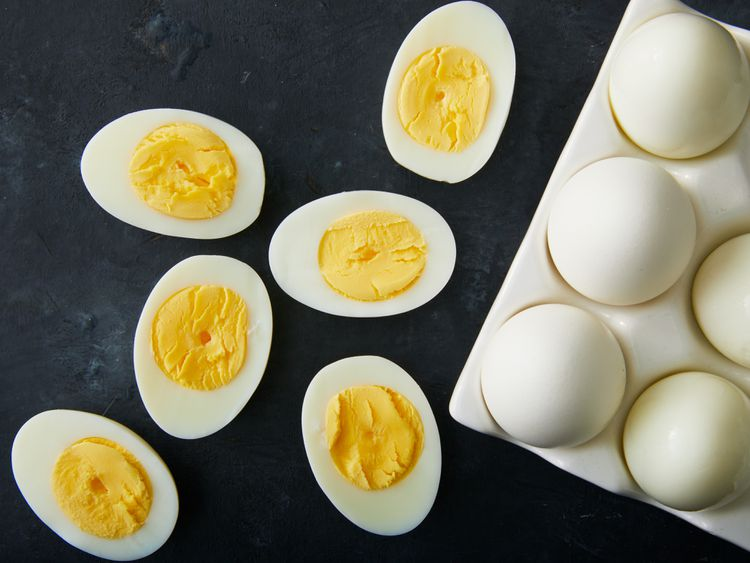

Return to Home
Hard Boiled Eggs Recipe

Description
Eight whole eggs should be perfectly hard boiled after about 14 minutes in
gently boiling water with vinegar and salt.
Ingredients
- 1 tablespoon salt
- ¼ cup distilled white vinegar
- 6 cups water
- 8 large eggs
- Gather all ingredients.
-
Combine salt, vinegar, and water in a large pot, and bring to a boil
over high heat.
-
Add eggs one at a time, being careful not to crack them. Reduce the heat
to a gentle boil, and cook for 14 minutes.
-
Once eggs have cooked, remove them from the hot water, and place into a
container of ice water or cold, running water. Cool completely, about 15
minutes. Store in the refrigerator up to 1 week.
- Enjoy!
Return to Top